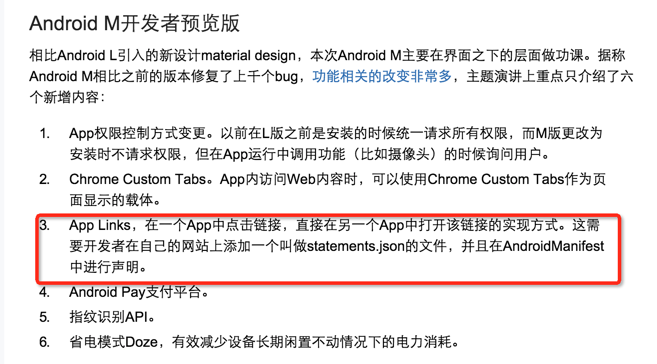

手机网页实现分享到本地微信微博等应用中
手机网页分享到微信和微博的见解。
目前来说只能借助第三方应用的分享接口来调用，主要原因是各app闭环，限制 URL Scheme接口。不过在web越来越火，javascript已经超神的今天，网页调用app是大势所趋，
看这个：Facebook 推出 App Links 开发者工具意在解决什么问题？ - 应用（软件）
google也已经有动作了：

我等骚年只能期待标准早日确定啦！
另外uc浏览器下分享请移步：HTML5网页端如何调用手机浏览器分享功能？ - Div wang 的回答
这是代码实现
/* 39yst.com：uc分享*/
var weixinShareBtn//微信分享按钮，默认隐藏
var weixin;//新建微信分享方法
var Browser=new Object();
Browser.ios=/iphone/.test(Browser.userAgent); //判断ios系统
if(/UCBrowser/gi.test(navigator.userAgent)){ //判断uc浏览器
weixinShareBtn.style.display = 'block'; //微信分享按钮
weixin = function(){ //微信分享方法
var title = shareData.desc;
var img = shareData.imgUrl;
var url = location.href+(location.search?"&":"?")+"uc_39yst";
if(Browser.ios){
ucbrowser.web_share(title, img, url, 'kWeixinFriend', '', '@39yst', '');
}else{
ucweb.startRequest("shell.page_share",[title,img,url,'WechatTimeline','','',''])
};
// gaevent('event','uc_share',Browser.ios?'ios':'android');
}
};